In unix and linux, init is the first process that is run. Systemd is new type of init process which replaced old SysVnit in ubuntu from 17.04 and centos from 7.
Linux booting is : start -> kernel -> loads important files(like initram disk, os etc.) -> systemd -> systemd mounts disks and starts services.
Systemd can load services in parallel.
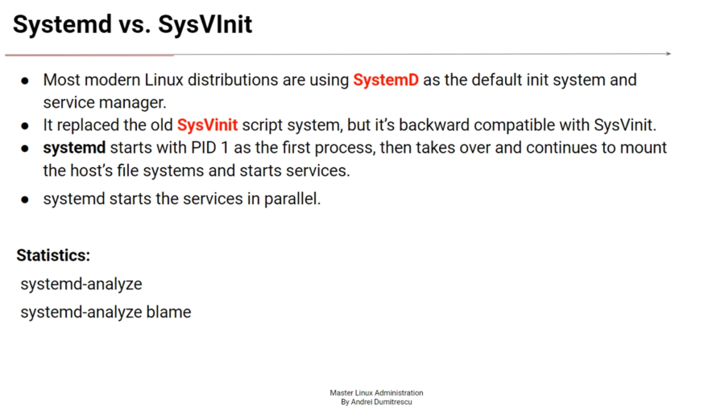
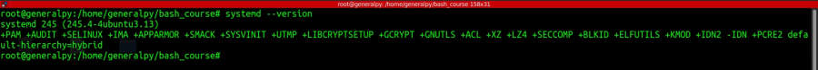
Use systemd-analyze to determine system bootup time
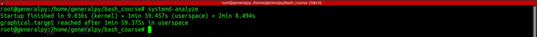
Use systemd-analyze blame to know time taken by each process during startup.
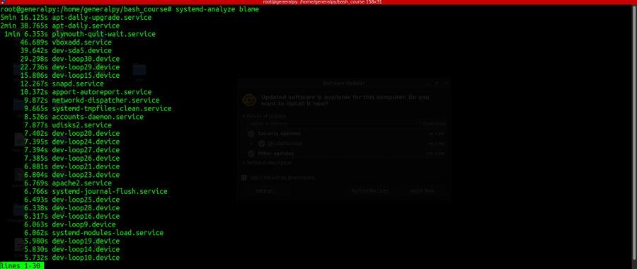
systemd introduces units such as service units, socket units, mount units etc. For service manaegment , service units have configuration files with suffix .service which instructs systemd how to load services.
systemctl can be used to manage systemd system and service manager.
There are some basic functions we can do with the services.
We can see startus of a service by
systemctl status service
We are not required to add .service at the end as systemctl can understand service without the .service extension.
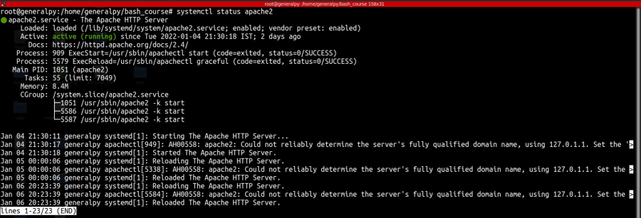
To start a service use :
systemctl start service
To stop a service use :
systemctl stop service
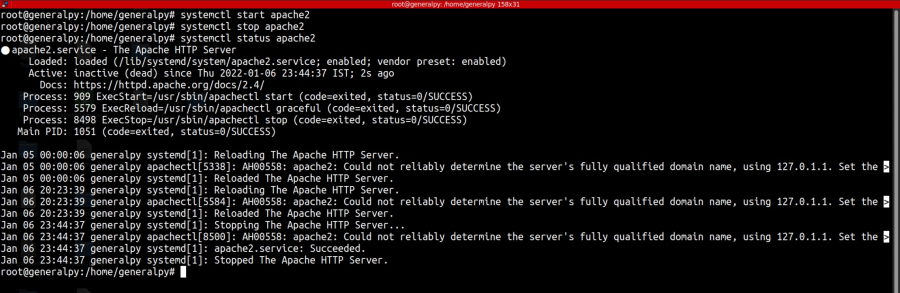
Services are started at boot time. We can enable or disable services to start at boot time by using.
systemctl enable/disable service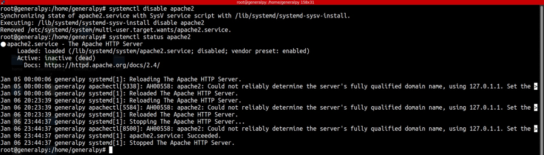
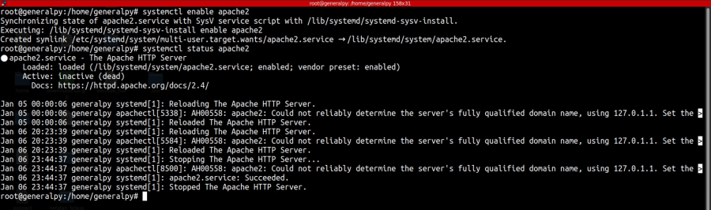
Note that enable/disable will not take effect till we restart the session while start/stop take effect in current session.
We can restrict a service from starting by using mask option
systemctl mask service
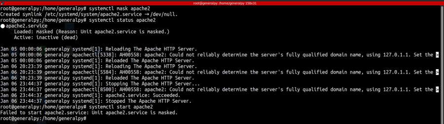
Use unmask to unmask the service.
Use is-enabled to check if a service is enabled or disabled.
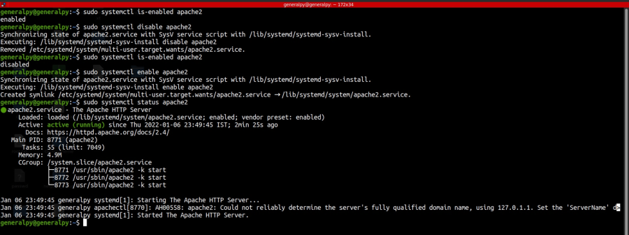
To list all units systemd knows about, use list-units. To list all units loaded by systemd even if they are not active.
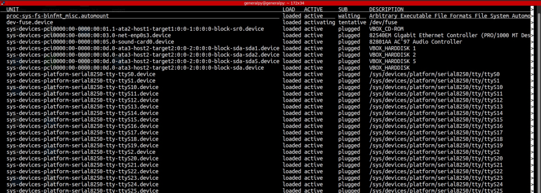